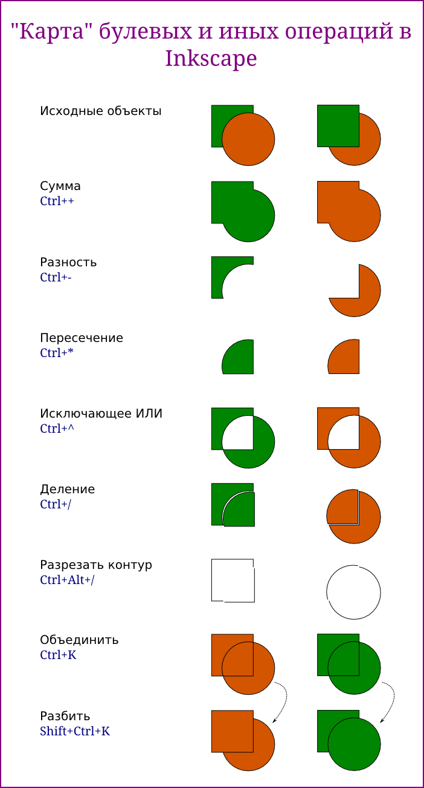

Файл->Свойства документа - портретная и альбомная ориентации холста. Выбрать альбомную.
Крутить колесо мыши - прокрутка рабочей области по вертикали.
Крутить колесо мыши с зажатой клавишей Shift - прокрутка рабочей области по горизонтали.
Перемещать мышь с зажатым колесом - перемещение рабочей области.
Крутить колесо мыши с зажатой клавишей Ctrl - масштабирование.
Клавиша 5 - видеть страницу целиком.
Горячая клавиша - F4.
Особенность изменения размера в режиме редактирования прямоугольника - не изменяется толщина контура.
Скругленные углы: настройка с помощью меток и панели параметров инструмента. Кнопка "Убрать закругление углов".
Рисовать прямоугольник с зажатой клавишей Ctrl.
Перемещение объекта.
Изменение размеров с помощью меток. Особенность - меняется толщина контура. Установка ширины и высоты на панели инструментов.
Второй щелчек мышью, метки скругления и скоса.
Получение сектора (мышь за контуром) и дуги (мышь внутри контура фигуры).
Кнопка "Сделать фигуру целым эллипсом".
Использование Ctrl.
Многоугольники и звезды. Количество углов.
Вытягивание и поворот луча у звезды.
Внутренняя метка - отношение радиусов и скручивание.
Клавиша Shift - закругление.
Клавиша Alt - искажение.
Количество витков.
Нелинейность (панель и Alt).
Исследуйте параметры инструмента "Калиграфическое перо" самостоятельно.
Фигуры по шаблону.
I - текст в контур, применение фильтра
II - сохранение и экспорт
III - фильтр "Рассеивание->Аэрограф"
IV - текст по контуру
RGB - значение какого из трех значений больше, тот цвет и доминирует.
Изучить прозрачность и размытие (два перекрывающихся прямоугольника).
| Прикрепленный файл | Размер |
|---|---|
| gradients.svg | 60.32 кб |
Создать карту булевых и других операций для двух пар квадрата и круга. В одной паре квадрат находится под кругом, в другой - над ним.

| Прикрепленный файл | Размер |
|---|---|
| bool.svg | 26.89 кб |
openarts.ru. Переработано.
openarts.ru
| Прикрепленный файл | Размер |
|---|---|
| text.svg | 46.45 кб |
| landscape.svg | 40.38 кб |
| folder.svg | 12.76 кб |
linuxgraphics.ru
Переработано.
| Прикрепленный файл | Размер |
|---|---|
| yin_yang.svg | 6.4 кб |
| tree.svg | 35.18 кб |
{kind=link}
{kind=link}
{kind=link}
{kind=link}
{kind=link}
{kind=link}
{kind=link}
{kind=link}